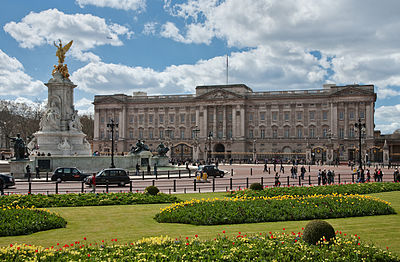

Buckingham Palace (UK /ˈbʌkɪŋəm/ /ˈpælɪs/[1][2]) is the London residence and principal workplace of the reigning monarch of the United Kingdom.[3] Located in the City of Westminster, the palaceis often at the centre of state occasions and royal hospitality. It has been a focus for the British people at times of national rejoicing.
Originally known as Buckingham House, the building which forms the core of today's palace was a large townhouse built for the Duke of Buckingham in 1703 on a site which had been in private ownership for at least 150 years. It was subsequently acquired by King George III in 1761[4] as a private residence for Queen Charlotte and was known as "The Queen's House". During the 19th century it was enlarged, principally by architects John Nash and Edward Blore, who formed three wings around a central courtyard. Buckingham Palace finally became the official royal palace of the British monarch on the accession of Queen Victoria in 1837.
The last major structural additions were made in the late 19th and early 20th centuries, including the East front, which contains the well-known balcony on which the royal family traditionally congregates to greet crowds outside. However, the palace chapel was destroyed by a German bomb during World War II; the Queen's Gallery was built on the site and opened to the public in 1962 to exhibit works of art from the Royal Collection.
The original early 19th-century interior designs, many of which still survive, included widespread use of brightly coloured scagliola and blue and pink lapis, on the advice of Sir Charles Long. King Edward VII oversaw a partial redecoration in a Belle Époque cream and gold colour scheme. Many smaller reception rooms are furnished in the Chinese regency style with furniture and fittings brought from the Royal Pavilion at Brighton and from Carlton House. The palace has 775 rooms, and the garden is the largest private garden in London.
The state rooms, used for official and state entertaining, are open to the public each year for most of August, September, December and January.[5]
1700